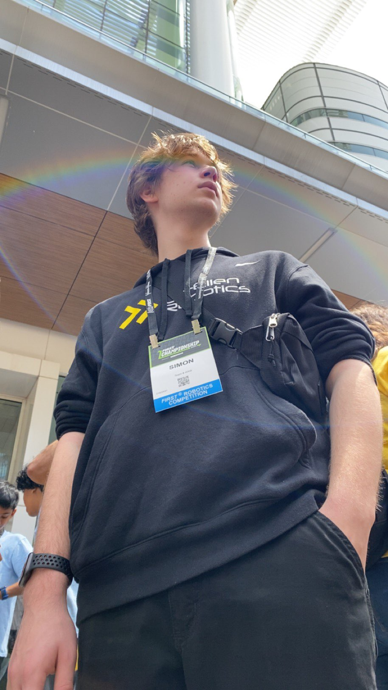

Languages & frameworks
PythonC++Java
Chemical Engineering & Robotics
I build computational tools and robotic systems that solve real problems. From vision algorithms to process simulation, I bring ideas to life through code.
Hi, I'm Simon Boeckner — a developer and maker based in Toronto. I combine chemical engineering fundamentals with software development to create systems that work in the real world.

Building vision algorithms for robotic systems; exploring agent-based modeling for complex systems; developing tools for process optimization and path finding.
“The best process is the one you can explain on a napkin — then
defend with data.”
Tools and topics I use in coursework, research, and side projects.
Projects from open source, learning, and experimentation. See my full work on GitHub.
Developed efficient Apriltag detection for robotic vision systems. Includes both C++ core implementation and Python bindings for easy integration.
Built a Python-based agent simulation framework supporting various configurations and interaction models. Great for exploring how local rules create global patterns.
Interactive simulator for comparing pathfinding strategies including A*, Dijkstra, and BFS. Useful for learning how algorithms navigate complex environments.
My journey.
University of Toronto
Focus: catalysis & reaction engineering.
Lo-Ellen Park Secondary School
FRC Programming Sub-lead.